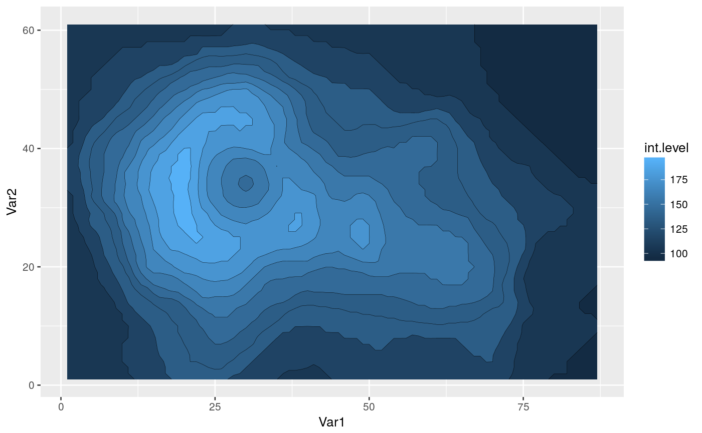
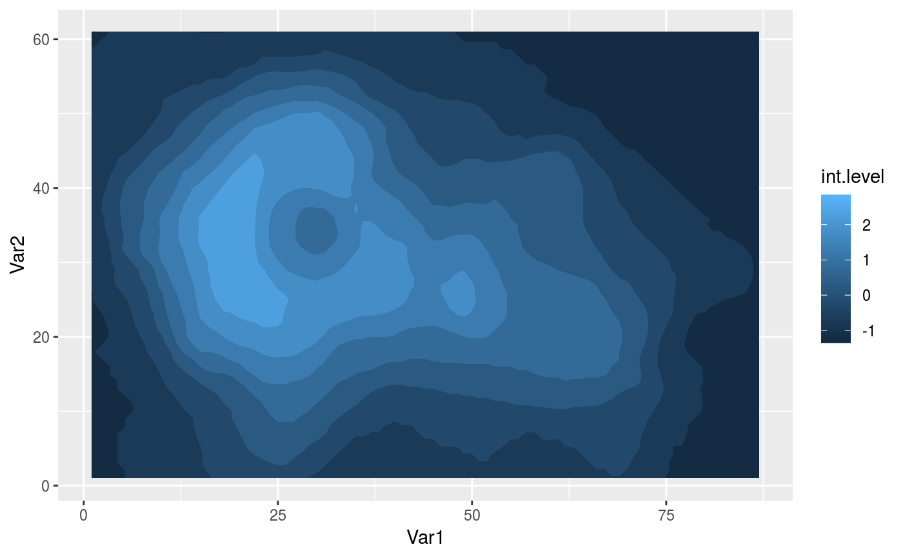

While ggplot2's geom_contour can plot nice contours, it
doesn't work with the polygon geom. This stat makes some small manipulation
of the data to ensure that all contours are closed and also computes a new
aesthetic int.level, which differs from level (computed by
ggplot2::geom_contour) in that represents
the value of the z aesthetic inside the contour instead of at the edge.
geom_contour_fill(mapping = NULL, data = NULL, stat = "ContourFill", position = "identity", ..., breaks = NULL, bins = NULL, binwidth = NULL, na.rm = FALSE, show.legend = NA, inherit.aes = TRUE) stat_contour_fill(mapping = NULL, data = NULL, geom = "ContourFill", position = "identity", ..., breaks = NULL, bins = NULL, binwidth = NULL, na.rm = FALSE, exclude = NULL, show.legend = NA, inherit.aes = TRUE)
| mapping | Set of aesthetic mappings created by |
|---|---|
| data | The data to be displayed in this layer. There are three options: If A A |
| stat | The statistical transformation to use on the data for this layer, as a string. |
| position | Position adjustment, either as a string, or the result of a call to a position adjustment function. |
| ... | other arguments passed on to |
| breaks | numeric vector of breaks |
| bins | Number of evenly spaced breaks. |
| binwidth | Distance between breaks. |
| na.rm | If |
| show.legend | logical. Should this layer be included in the legends?
|
| inherit.aes | If |
| geom | The geometric object to use display the data |
| exclude | a numeric vector of levels that should be excluded from the contour calculations |
geom_contour_fill understands the following aesthetics (required aesthetics are in bold):
x
y
alpha
colour
group
linetype
size
weight
value of the interior contour
Other ggplot2 helpers: DivideTimeseries,
MakeBreaks, RepeatLon,
geom_arrow,
geom_label_contour,
geom_relief, geom_vector,
reverselog_trans,
scale_color_divergent,
scale_longitude, stat_filter,
stat_na
Other ggplot2 helpers: DivideTimeseries,
MakeBreaks, RepeatLon,
geom_arrow,
geom_label_contour,
geom_relief, geom_vector,
reverselog_trans,
scale_color_divergent,
scale_longitude, stat_filter,
stat_na
library(ggplot2) surface <- reshape2::melt(volcano) ggplot(surface, aes(Var1, Var2, z = value)) + geom_contour_fill() + geom_contour(color = "black", size = 0.1)# Plots only deviations from the mean. ggplot(surface, aes(Var1, Var2, z = as.numeric(scale(value)))) + geom_contour_fill(complete = FALSE, exclude = 0)# If one uses level instead of int.level, one of the small # contours near the crater disapears ggplot(surface, aes(Var1, Var2, z = value)) + geom_contour_fill(aes(fill = ..level..))